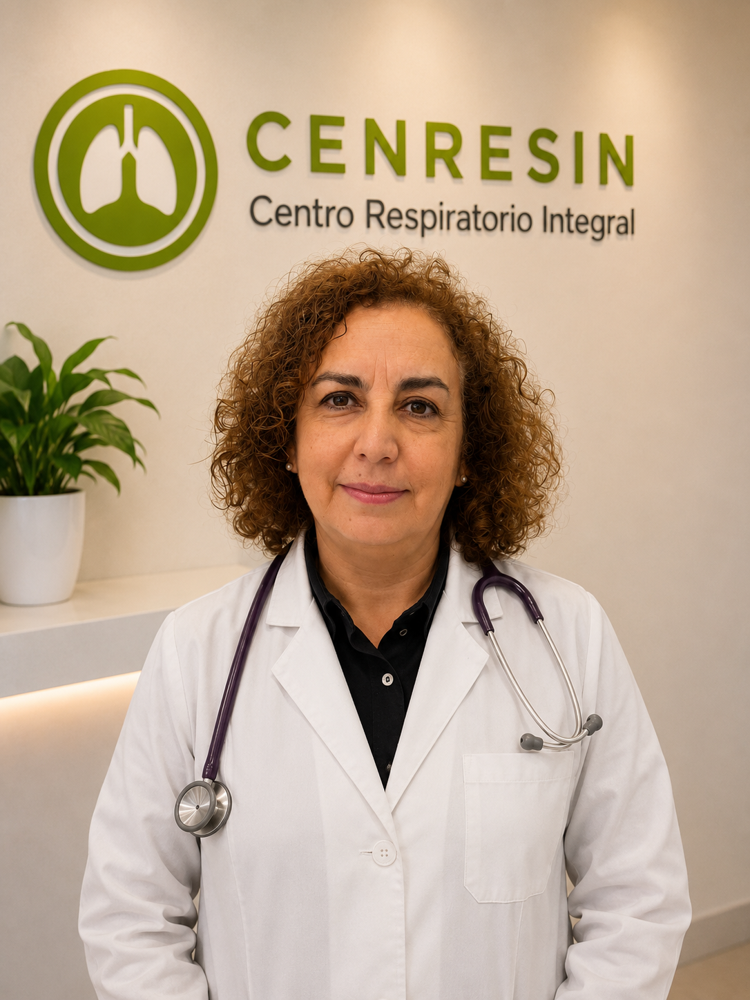
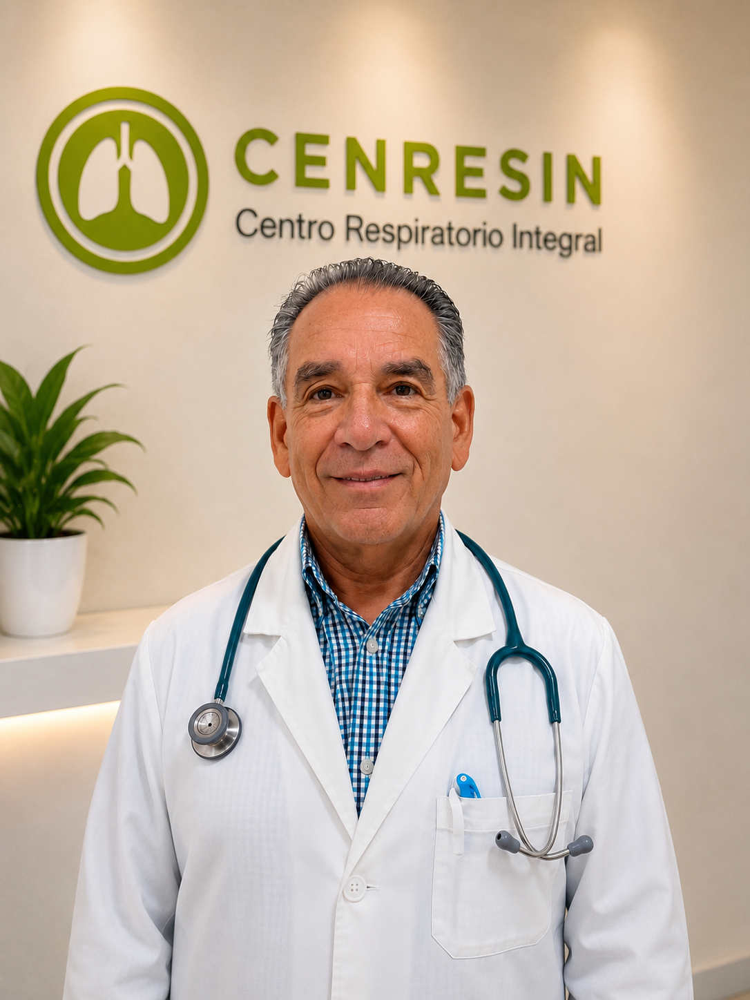
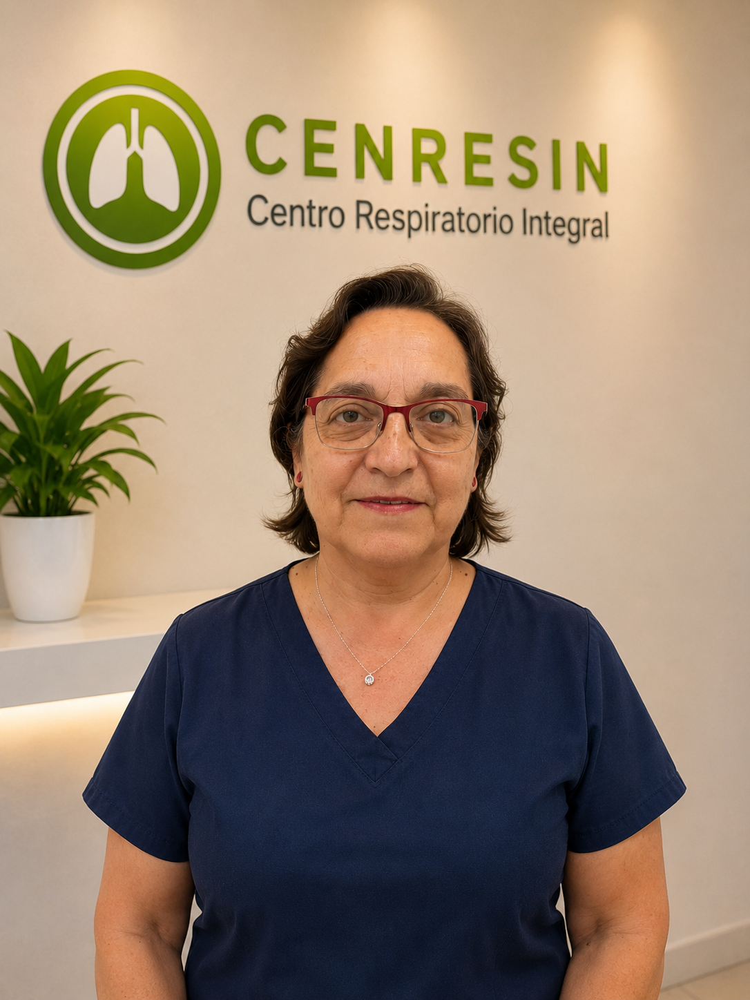
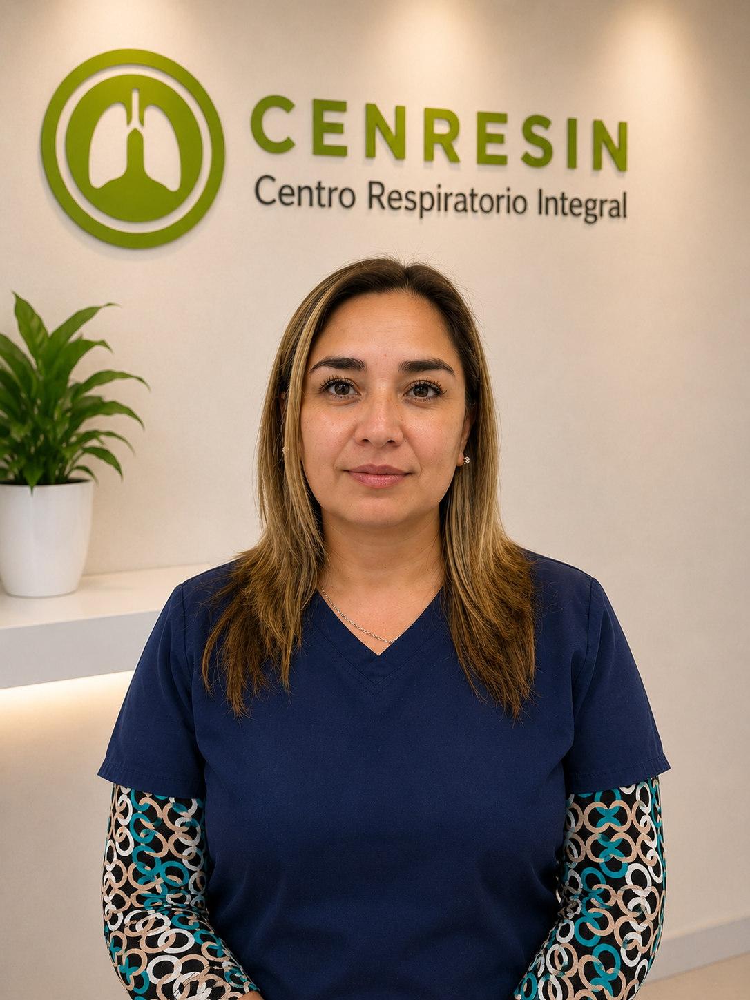
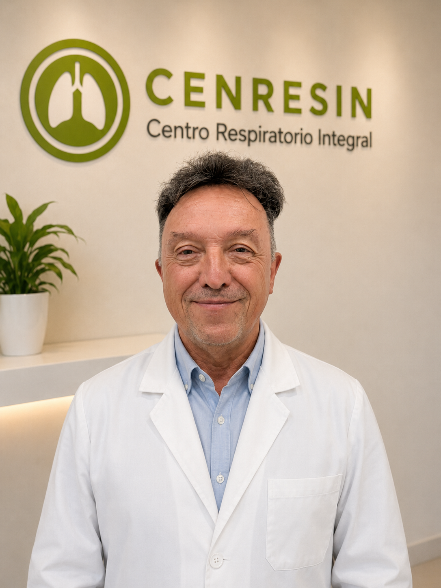
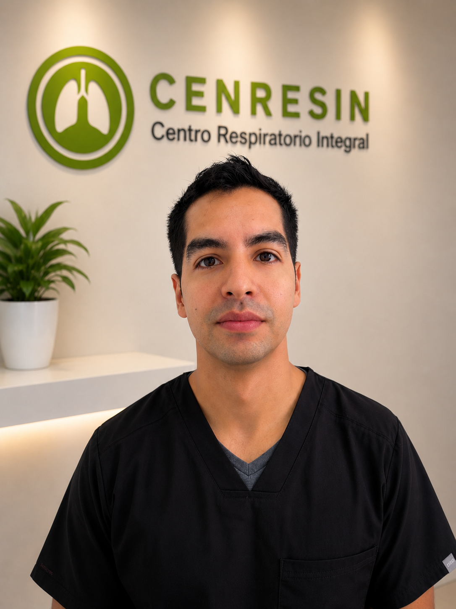
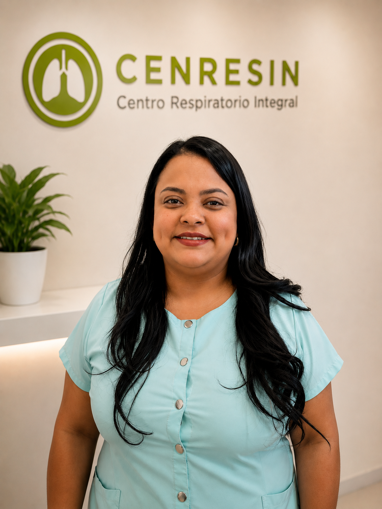

Dra. Claudia Cartagena
BroncopulmonarEvaluación y seguimiento especializado de enfermedades respiratorias.
Atención clínica especializada, diagnóstico avanzado y bienestar integral, con profesionales organizados por área de atención.
Manejo clínico de asma, EPOC, patologías pulmonares y seguimiento respiratorio para pacientes adultos, niños y familias.

Evaluación y seguimiento especializado de enfermedades respiratorias.

Atención respiratoria y acompañamiento clínico de pacientes pulmonares.
Atención primaria, control preventivo, seguimiento clínico y orientación médica para niños, adultos y familias.

Atención integral, evaluación clínica y seguimiento de pacientes adultos.

Atención médica orientada a niños, controles y acompañamiento familiar.
Apoyo clínico para la evaluación del ritmo, estructura y función cardíaca, complementando el cuidado integral del paciente.

Evaluación cardiológica, control y apoyo diagnóstico cardiovascular.
Nutrición clínico-deportiva, evaluación corporal, apoyo psicológico y orientación para una atención más completa del paciente.

Evaluación nutricional, composición corporal y acompañamiento de hábitos saludables.

Apoyo para salud mental, bienestar emocional y acompañamiento del paciente.